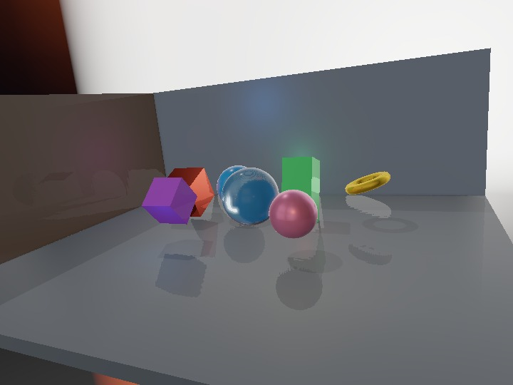

compute_benchmark
English | 日本語

概要
compute_benchmarkは、ComputeEffectPipelineでPBR表示を構成する実行時の全段階を同じscene条件で測り、PBRのgeometry、照明、反射、透明面、出力変換の負荷を確認するサンプルです。測定範囲をPBR処理へ限定し、無関係な後処理を基準値へ含めません。
固定sceneには粗さと金属度が異なる不透明物体、閉じたTransmission球、床、壁を配置します。照明には方向光、指定数のpoint light、線形HDRのprocedural IBLを使います。SSRはpbr-ssrで鏡面IBLを置換し、透明球にはIORと吸収距離を指定します。このため、測定ボタンを押した時点でDeferred PBR、IBL、PBR SSR、Transmission、Frost、透明Forwardがすべて実行されます。
測定する段階
gbuffer-renderは不透明geometryからalbedo、view-space normal、PBR material、emissive、Reverse-Z depthを作る描画を測ります。shadow-mapは方向光のshadow map描画、shadow-visibilityはG-bufferとshadow mapから画面単位の可視率を作るcompute処理を測ります。
ssaoは低解像度AO生成とdepth/normalを使うbilateral復元を含むSsaoPass全体です。deferred-lighting-pbrは方向光、Local Light、SSAO、前処理済みIBLを使うGGX照明を評価し、HDR照明色と鏡面IBL成分を出力する処理です。ssr-pbrはray探索、粗さPyramid、粗さfilterを含むComputeSsrPass全体、pbr-ssr-composerはその結果で鏡面IBLを置換する独立合成です。ssr-pbr-fusedはray探索とPyramidの後、roughness filterと鏡面IBL置換を一つの最終dispatchで実行します。二段構成の合計と融合caseを同じrun内で比較できます。
transparency-pbrは透明処理全体です。さらにTransparencyPassが持つ名前付きGPUプロファイラから、次の内部区間をtransparency:*行として取得します。
transmissionMask: 最前面の法線、Transmission強度、深度を描く処理transmissionVolume: 吸収色と吸収距離を描く処理transmissionExit: back faceの位置、法線、IORを描く処理transmissionComposite: 2面屈折rayとBeer-Lambert吸収を背景へ適用する処理frostPyramid: 透明面の粗さに応じた低周波背景を作る処理roughnessMask: 透明面の最大粗さを画面へ描く処理frostComposite: 粗さmaskでFrost背景を選んで合成する処理forward: 透明PBR surfaceをshadow、Local Light、IBL付きで描く処理
tone-mapは透明合成後の線形HDR色をReinhard Tone Mapで表示色へ変換します。最後のfull-pbr-pipelineは、上記のtop-level段階をrenderScene()とencode()で一つのframeへ記録した通し時間です。実際のtexture受け渡しとcommand列を含む通し計測の比較基準として使います。
環境マップのCPU生成やGPU前処理はアプリ起動時またはasset作成時の処理であり、毎frameのPBR計測とは別に扱います。このサンプルでは小さな前処理済みprocedural environmentを起動時に作り、その生成時間を結果へ含めません。Fog、Toon、DoF、Bloom、Edge、VignetteもPBR基準値から除外しています。
実行方法
- compute_benchmark.htmlをWebGPUと
timestamp-queryに対応するbrowserで開きます Samplesへwarmup後に記録する回数、Warmupへ統計から除外する事前実行回数を入力しますLocal Lightsへ0から128までのpoint light数を入力します。既定値は8ですPBR SSRはFusedが既定です。二つのSSR実行方式を比較するときはTwo-pass referenceを選びますRefresh Previewで固定scene、IBL背景、反射、透明球の見え方を確認しますRun PBR Baselineを押し、全caseが完了するまでbrowser tabとwindowを前面に保ちます- 必要に応じて
Download JSONまたはDownload CSVで結果を保存します
入力値は範囲外を自動補正しません。不正な整数や範囲外の灯数は測定を停止して表示します。解像度はcanvasの物理pixel数を使うため、windowサイズとDPRを変えた結果は同じ系列として比較できません。二つのrunを比較するときはcanvas寸法、DPR、Local Light数、電源状態、browser、GPU driverを揃えてください。
結果の読み方
単一のrender/compute pass、または開始と終了のtimestampを内部passへ渡せるtop-level行は、timestamp-queryでGPU時間を測りtimerへgpuと表示します。full-pbr-pipelineは先頭のShadow Map Render Passへ開始timestamp、最終Tone Mapへ終了timestampを渡し、その間にある全PBR passのGPU時間を測ります。複数passを持つTransparency単体は外側のtimestampを一つのpass descriptorへ渡せないため、transparency-pbrだけcommand encode完了後のsubmit直前からqueue完了までを測りqueueと表示します。avg msは平均、medianは中央値、P95は遅い側から5%の境界、min/maxは観測範囲、nは記録数を表します。まず中央値で通常負荷を比較し、P95と最大値で揺れを確認し、平均が中央値から大きく離れる場合は外れ値を調べます。
transparency:*行のtimerはprofileです。これはTransparencyPassが最大60 frame保持する内部GPU timestampの移動統計で、中央値、平均、最小、最大を表示します。生sample配列を公開していないためP95と標準偏差は--になります。top-levelのtransparency-pbrは透明処理全体を外側から囲む値なので、内部区間の合計と完全には一致しません。
full-pbr-pipelineには、G-bufferとshadow mapのrender pass、およびPBRのcompute/透明render passが一つのcommand列として含まれます。計測範囲はGPUで実行するcommand列です。CPU側のscene走査やcommand encode時間は計測範囲の外です。各段階の比率を探すときは個別行、実際のPBR frame全体の改善を確認するときはfull-pbr-pipelineを使います。
JSONはrawSamplesMsとともに、物理解像度、表示寸法、DPR、Local Light数、PBR SSR融合の有無、shadow map寸法、SSAO、SSR、Transmission、IBL、Tone Map、除外段階、browser情報を保存します。二つの結果を比較するときは、このmetadataが一致することを先に確認してください。
実装上の確認点
- sample固有のshaderや複製pipelineを作らず、公開済みの
ComputeEffectPipelineと各passを直接使います - PBR全caseで同じCamera Frame、固定scene、方向光、Local Light、IBL、SSR、Transmission設定を使います
- 個別caseの入力準備は毎回実行しますが、準備時間はそのcaseのtimestampへ含めません
- PBR SSR合成にはDeferred Lightingの鏡面IBL、G-buffer material、AO、BRDF LUTを明示します
Fusedはroughness出力のrgba16float丸めと低解像度pixel対応を再現し、独立Composer dispatchだけを省きますTwo-pass referenceは比較を明示した場合だけroughness filterとComposerを順に実行します- 透明詳細値は
TransparencyPass.getPerformanceSnapshot()から取得し、未計測区間を計測済みの値と区別して表示します window.pbrBenchmarkResultへ最後の結果を公開し、body[data-benchmark-status="ready"]で完了を確認できます